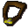
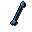
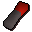
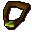

Temple of Ikov (Armadyl)
Scripts in
scripts/quests/quest_ikov/NPCs involved
Items involved

Armadyl pendant
Ice arrows
Lever
Pendant of lucienInvolvement is derived from identifiers referenced by the quest scripts.